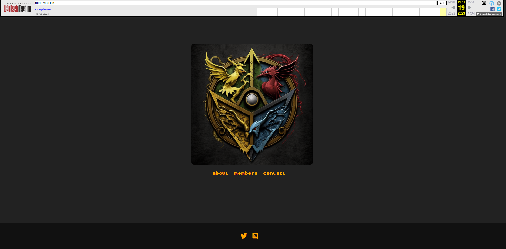
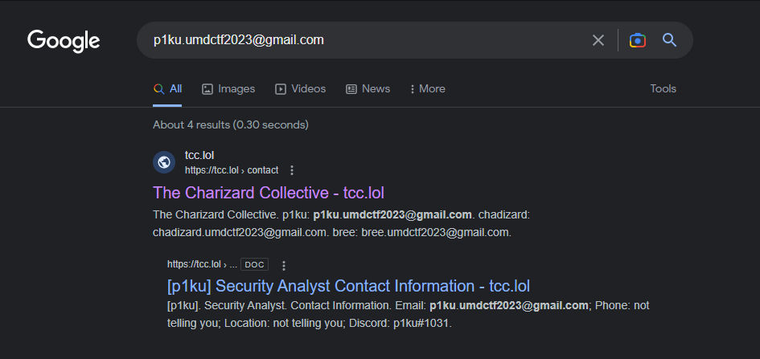
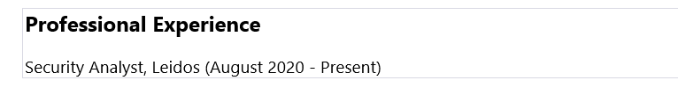
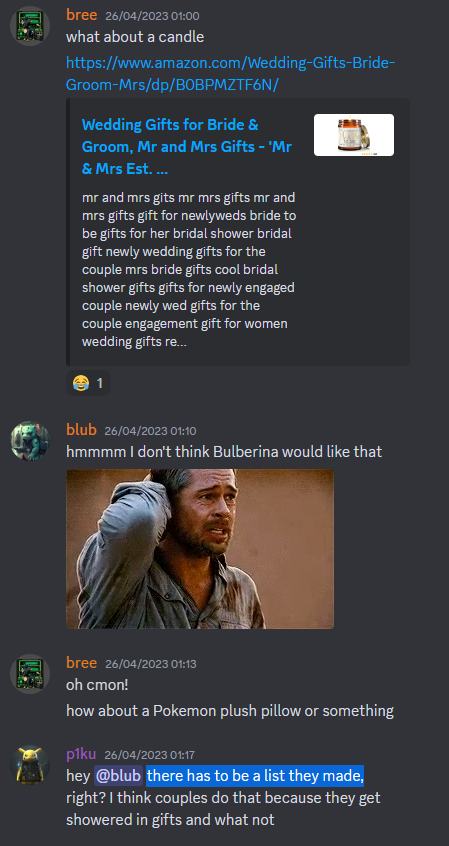
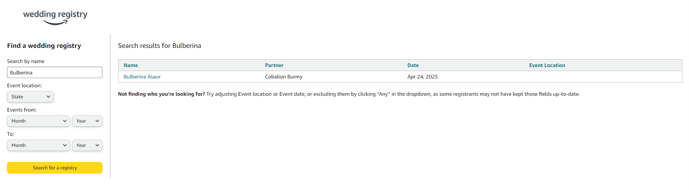
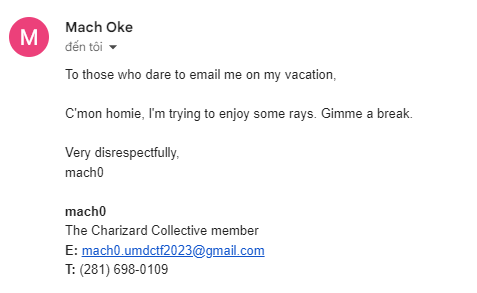
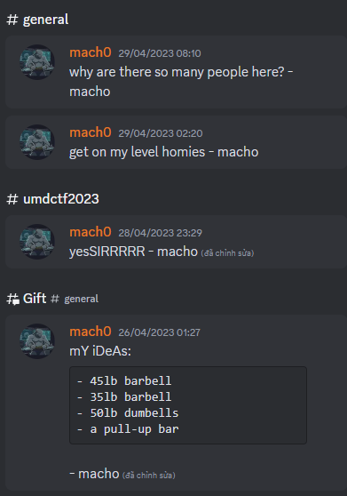

TCC1
Given website: Click here!
Description: I found this hacker group and they’re acting kinda strange. Let’s do some diggin’. Maybe we can find their discord server? I thought they linked it on their website before…
Category: OSINT
From the description, we know that the hacker group had linked their Discord server before. By pasting the website URL https://tcc.lol into the Wayback Machine, we successfully gained access to the deleted link of the Discord server!

Examining the description of the welcome channel, we find the flag UMDCTF{w3lc0me_t0_th3_b35t_d!sc0rd_982364}
TCC2
Description: What is the secret page on their website?
The secret page contains four questions. We must answer all of them correctly to access the flag.
The first question: What place did TCC get in their most recent CTF competition? After researching their team, we found them on ctftime. They only participated in DawgCTF 2023 and ranked 145th.
The second question: Which company is p1ku currently working for? We searched for p1ku’s email on Google and found his resume (his email can be found on the contact page if you didn’t know).

In the Professional Experience section, we learned that he works at Leidos.

The third question: What is bree’s favorite CTF category? In his profile on the members’ page, there is a hashtag #miscgang. We can assume the answer is misc.
The last question: What is the brand name of the gift that blub is going to buy? We found a thread titled Gift in their Discord server.

From the Amazon link and p1ku’s statement that there has to be a list they made, we can guess that the couple may have created an Amazon wedding registry. Searching for Bulberina - the name blub mentioned - we found their wedding registry (confirmed by the Hasbulla cutout on their list).

Blub mentioned that it’s some kind of storage thing. After a few attempts, we discovered the correct gift. The answer is Shazo.
After providing all the answers, we received the flag UMDCTF{y0u_sur3_kn0w_h0w_t0_d0_y0ur_r3s3@rch_289723}
TCC3
Description: I’m missing contact information for one of the members. They said they were Out of Office (OOO) on vacation.
Upon researching the term Out of Office (OOO), we learned that it is an automated email response sent to anyone who emails you while you’re away. In the contact page, mach0’s email is missing. We can assume the member they mentioned is mach0. We also noticed a pattern in the members’ emails:
p1ku: p1ku.umdctf2023@gmail.com
chadizard: chadizard.umdctf2023@gmail.com
bree: bree.umdctf2023@gmail.com
blub: blub.umdctf2023@gmail.com
titos: titos.umdctf2023@proton.me
Could mach0’s email follow this pattern as well? We assumed it is mach0.umdctf2023@gmail.com. Based on the Out of Office (OOO) hint, we tried sending an email to him. Surprisingly, we received a response.

He left his telephone number (281) 698-0109. Suspecting he may have left a message on his phone, we called the number and found a voicemail. We recorded it, and you can access it here. The flag is UMDCTF{y0u_h4v3_r3ach3d_mach0_v01cema1l_333}
TCC4
Description: mach0 told me he has been tweeting a lot and might expose TCC secrets!
We noticed that mach0 always ends his sentences with - macho in Discord.

We speculated he could do the same in his tweets. Searching the query "- macho" lang:en until:2023-05-01 since:2023-04-01 and sifting through thousands of tweets, we finally found his account here. We saw a pastebin in one of his tweets. We clicked on the link and obtained the flag: UMDCTF{tw1tt3r_adv4nc3d_s3arch_y0ink}
Conclusion
In this challenge, we successfully investigated the hacker group through various OSINT techniques, including using the Wayback Machine, researching team rankings, exploring email patterns, and examining social media. We managed to find the flags in each step by digging deep into the information available and making educated guesses. This challenge emphasizes the importance of thorough research and persistence in solving complex problems. Overall, I would rate this challenge a 4 out of 5. The challenge required a combination of research skills, attention to detail, and creative thinking to successfully complete each step. The difficulty level made the challenge engaging and rewarding, while still being approachable for those with intermediate OSINT experience.